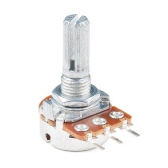
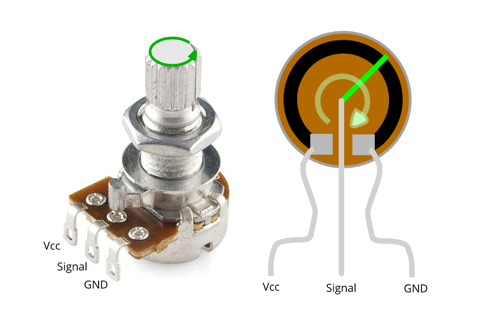
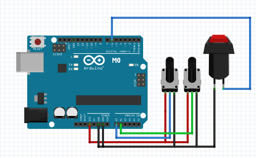

Sensor Communication & Tuning¶
For the whale’s movement in the game, three variables are acquired by the electronic system and sent in parallel at each time step. The variables are the two angles of rotation of the patient’s legs that control the position and jaw of the whale, and a binary signal that controls the whale’s water spray. Two potentiometers were used to detect the rotation of the patient’s legs.
The three lugs of the potentiometer correspond, from left to right, to power input, signal output and ground, as shown below:
Rotating the upper part of the potentiometer alters the resistance between the signal output and the power input as shown in the middle figure,
|  |  |
An Arduino M0 board is used to monitor the potentiometer’s output as an analog reading in the range of \(0\) to \(1023\) from its serial ports A0 and A1, and digitise it.
|  |
{kind=link}
The potentiometer has a rotation range of \(270\) degrees, thus the potentiometer’s output signal, \(N\), can easily be converted into an angle, \(\theta\), in degrees using Equation:
The potentiometers are screwed in different orientations as the patient’s left and right leg rotate anticlockwise and clockwise, respectively. When the two legs are in their initial position (closed and centred), the potentiometer should be at its 0 position. However, since the legs do not have the limitation of the centre position, unlike the potentiometer, an offset was used to counteract this and avoid mechanical damaging. The offsets for two potentiometers were tested and calculated in Arduino to get actual leg angles, shown in the equation below, where Reference and Actual each indicates \(\theta\) with and without offset.
The game version requiring both legs:
- the movement of the right leg corresponds to the opening of the whale’s jaw (i.e. open and close)
- the movement of the left leg corresponds the whale’s position (i.e. up or down).
The whale can be in either one of two positions. It will descend towards the bottom position when the angle is larger than a threshold and ascend to the top position when the angle is smaller than another threshold. The difference between the two thresholds was implemented to avoid cheating by swinging the leg across a small range. The whale’s jaw angle experiences an error that fluctuates between \(0\) and \(0.5\) at steady state and accumulates with time. A move average filter was applied to minimise this fluctuation and avoid error accumulation. The whale’s spraying action is triggered by a button. The button is connected to the Arduino’s M0 digital input pin. The serial monitor reads a \(1\) when the button is pressed and a \(0\) when it is released. The entire electronic connections to the Arduino board presented in the M0 figure above.
The full Arduino code has been appended below:
/*
Reads an analog input on pin 0, converts it to angle that potentiometers screwing,
and prints the result to the Serial Monitor. Graphical representation is available
using Serial Plotter (Tools > Serial Plotter menu). Attach the center pins of two
potentiometers to pin A0 and A1, and the outside pins to +3.3V and ground.
*/
#include "MovingAverage.h"
// This is the moving average filter from https://github.com/sofian/MovingAverage
MovingAverage average(20);
const int buttonPin01 = 6;
int buttonPush;
// the setup routine runs once when you press reset:
void setup() {
// initialize serial communication at 9600 bits per second:
Serial.begin(9600);
// initialize digital input and set it as high
pinMode(buttonPin01, INPUT);
digitalWrite(buttonPin01, HIGH);
}
// the loop routine runs over and over again forever:
void loop() {
// when button is not pushed, buttonPush is 0
buttonPush=0;
// reset the delta angle each loop preventing cached reference from the previous loop
// read the input on analog pin 0:
int sensorValue_r = analogRead(A0);
int sensorValue_l = analogRead(A1);
// Convert the analog reading (which goes from 0 - 1023) to a angle (0 -
// 270 degree):
float angle_r = sensorValue_r * (270 / 1023.0);
float angle_l = sensorValue_l * (270 / 1023.0);
// when button is pushed, the digital input change to low and buttonPush is asigned to 1
if (digitalRead(buttonPin01) == LOW)
{
buttonPush=1;
}
// Get actual angle according to offsetvalue
float actualAngle_r=angle_r-49;
float actualAngle_l=229-angle_l;
// Using filter
float movingAvg_r = average.update(actualAngle_r);
// float movingAvg_l = average.update(actualAngle_l);
SerialUSB.print(movingAvg_r);
SerialUSB.print(",");
SerialUSB.print(actualAngle_l);
SerialUSB.print(",");
SerialUSB.print(buttonPush);
SerialUSB.println();
SerialUSB.flush(); // for completing previous data sending
delay(20); // in case the previous line doesn't work well
}
Tip
As you can perceive from the start, a moving average filter has been applied to the right leg angle due that, the reading from Arduino is very fluctuating, without smoothing the reading using the filter, the whale jaw might move in a creepy pattern due to the reaction to random noises. The filter has only been applied to right leg angle since the left one gives binary output, noise won’t be affecting the performance of the patient.